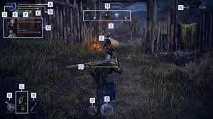
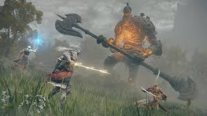

Elden Ring es un videojuego de rol de accion y mundo abierto desarrollado por FromSoftware y publicado por Bandai Namco Entertainment. Fue lanzado en febrero de 2022 para PlayStation 4, PlayStation 5, Xbox One, Xbox Series X/S y PC. El juego fue creado bajo la direccion de Hidetaka Miyazaki, el director de Dark Souls, con la colaboracion del escritor de fantasma George R. R. Martin, conocido por su trabajo en Cancion de Hielo y Fuego, que inspira la serie de television Game of Thrones.
¿De que trata Elden Ring?
La historia de Elden Ring esta ambientada en un mundo llamado The Lands Between (Las Tierras Intermedias), un vasto reino dividido por misterios y ruinas. En este mundo, el Elden Ring una especie de artefacto magico que sostenia el equilibrio del mundo ha sido destruido, lo que ha llevado a la desestabilizacion del reino y a la calda de sus dioses. Como resultado, el mundo esta plagado de caos, luchas y criaturas monstruosas.
El protagonista, conocido como el Tarnished (Unido o Despojado), es un ser que ha sido exiliado de las Tierras Intermedias pero ahora regresa para encontrar los fragmentos del Elden Ring y convertirse en el proximo Elden Lord. A lo largo del juego, el Tarnished debe enfrentarse a poderosos enemigos, explorar ruinas y descubrir secretos que estan mas alla de su comprension.
 